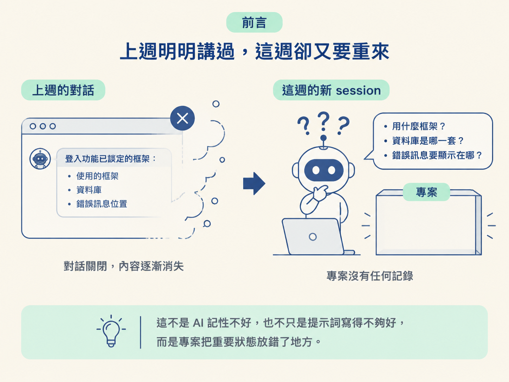
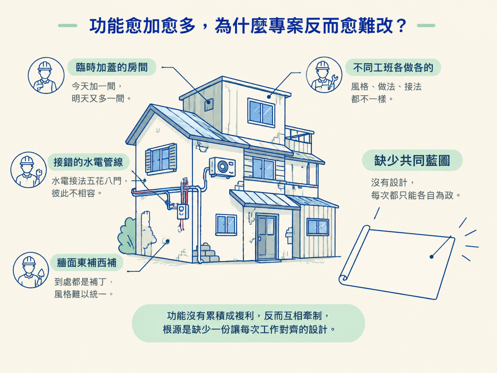
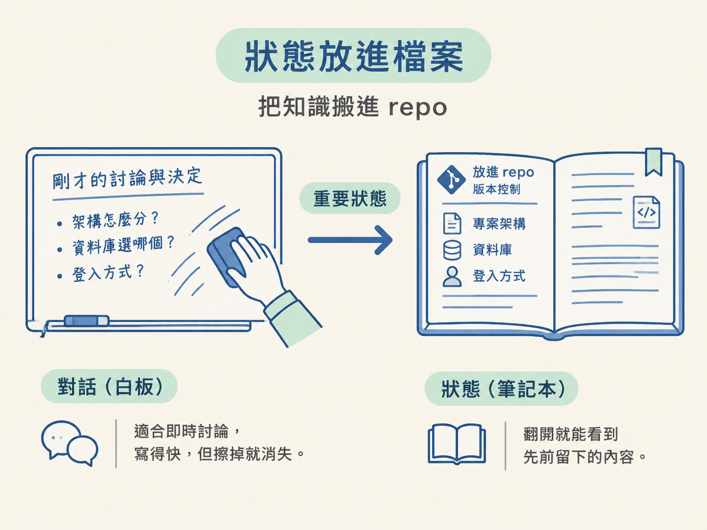

看完這一節，你應該能用自己的話說明「狀態放檔案」解決了什麼問題，也能解釋為什麼把專案知識留在對話裡，會讓程式愈做愈難改。
想像你上週用 AI 做完一個登入功能。這週開了新的 session，請它加上「記住我」的勾選框，AI 卻反過來問：專案使用什麼框架？資料庫是哪一套？登入失敗時，訊息要顯示在哪裡？
你可能會想：「上週不是才講過嗎？」但那些決定只存在上週的對話裡，而那段對話已經關掉了。別急著怪 AI 記性差或提示詞不夠好，問題出在專案把重要狀態放錯了地方。

在急著記住每個 skill 負責什麼之前，先要回答一個更底層的問題：專案的知識到底應該住在哪裡？把狀態寫進檔案，是整套工作流能穩定運作的前提。
一開始，AI 幫你做前端、後端、資料庫，速度很快。一個下午就多了好幾個功能。但過了一陣子，問題開始出現：修好一個地方，另一個地方卻默默壞掉；請 AI 加一個小功能，它又新建一個元件，而相同的邏輯其實早就存在。
功能沒有形成累積，反而開始互相牽制。新程式弄壞舊程式，專案也愈來愈慢、愈來愈亂。
這很像蓋房子時沒有圖紙，今天找一個工班加一間房，明天換另一個工班接水電。每加一部分，就多一種風格和一種接法，最後不是工班不夠厲害，而是整棟房子沒有共同遵循的設計。

專案會「腐化」而不是「複利」，通常不是 AI 不會寫程式，問題出在少了一份能讓每次工作對齊的共同藍圖。
遇到這些狀況時，第一個直覺通常是：「是不是我的提示詞寫得不夠好？」但根源往往不在提示詞。
認真的工程團隊在寫程式前，會先釐清幾件事：要做什麼、第一版包含什麼、哪些事情明確先不做，以及功能要按照什麼順序完成。需求先於程式碼，這是軟體工程早就處理過的問題；只是開始用 AI 之後，很多人不知不覺把這一步省略了。
關鍵在於，修改計畫和修改程式碼的成本完全不對稱。計畫裡的一行文字，通常很容易調整；但一個決定一旦散落在整個 codebase 裡，改掉它就可能等同於重寫。
如果決定只活在對話裡，每次新的生成都得重新猜一次。這次猜成一種登入方式，下次可能猜成另一種；久而久之，程式碼就會慢慢漂移。換一個再漂亮的提示詞也根治不了，真正的問題是少了可保存、可追蹤的工程狀態。
對話最大的限制，是它留不住。session 可能被關掉，脈絡可能被清空，隊友也未必看得到你昨天和 AI 討論的內容。
於是，每個新的 session 都像失去記憶，只能從零開始猜專案的慣例。每一次猜測可能只差一點點，但累積起來，就會形成不同的命名方式、不同的元件結構，甚至不同的設計方向。
對話裡的決定也很難追溯。你可能記得「當初好像討論過登入方式」，卻想不起來最後選了什麼；過一個月回頭看，更不知道為什麼某張資料表會長成現在的樣子。沒有記錄，就很難判斷該不該改，也很難讓下一個人接手。
這套工作流的第一個核心決定很簡單：重要狀態要寫進專案檔案，不要只留在對話中。
這些檔案就是專案知識的家。工作流把狀態分成四種：
context 檔。scope。spec。design 檔。下一節會逐一說明這四種檔案各自負責什麼。現在先抓住它們共同存在的理由：讓重要知識離開會消失的對話，進入每個人都能讀取、檢查和延續的 repo。
可以把兩者想成白板和筆記本。對話像白板，適合即時討論，寫起來很快，但擦掉就消失；狀態檔像筆記本，翻開就能看到先前留下的內容。

狀態一旦住進檔案，新的 session 只要讀取磁碟上的現況，就能接著工作。你可以清掉對話，也可以隔週再回來，因為真正重要的決定不再依賴某一段訊息串。換一個隊友，或甚至連你自己都忘了當初的理由，檔案仍然保留那份共同事實。
「狀態放檔案」解決的是知識會蒸發的問題：對話一關就消失，檔案則會留下來。它讓工作能跨 session 接續，整個團隊共享同一份事實，每個決定也都有地方可查。這是整套工作流的底座，後面的 skill 都建立在它之上。
所以，狀態檔不是額外的文件工作，也不是把對話換個地方貼上去。它是在專案裡建立一層穩定的共同記憶，讓每次生成都能接著既有決定往前走，不用重新猜一次。
接下來的問題就是：這四種檔案各自應該放什麼？它們如何分工？又為什麼 AGENTS.md 需要一層一層地放在不同位置？下一節會把這些關係攤開來看。